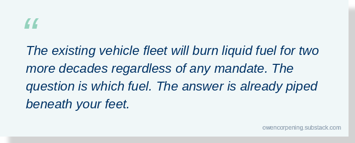
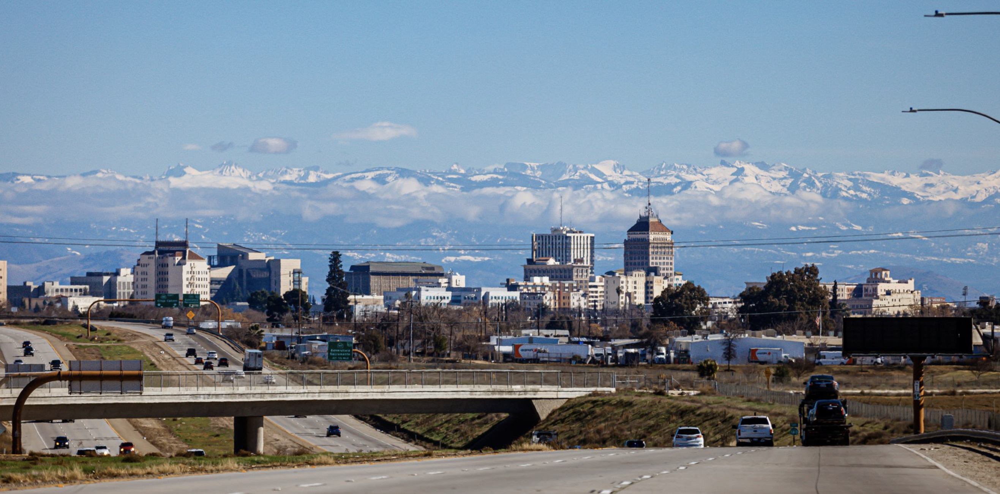
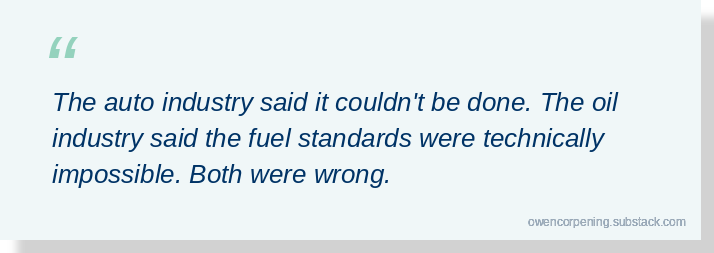
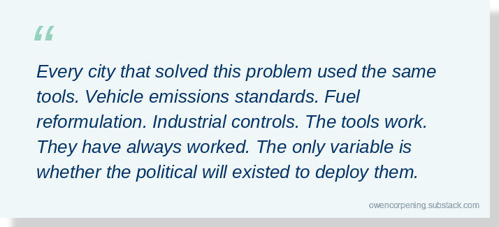
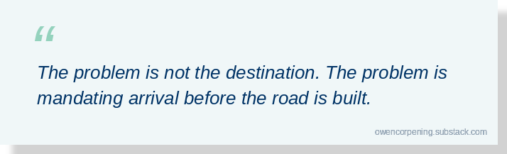
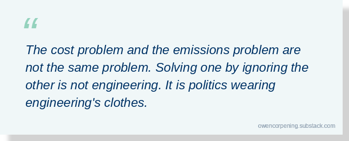
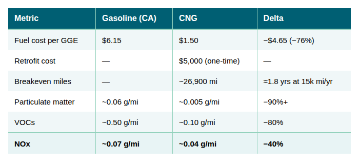

The CNG Manifesto

Exploring the hidden logic and overlooked systems of everyday life, from the perspective of an engineer.
It's not activism. It's not theory. It's engineering.
Engineering Premise
The existing vehicle fleet will burn liquid fuel for two more decades regardless of any mandate; the question is which fuel, and the answer is already piped beneath California's streets.
Executive Summary
California's geography made vehicle emissions regulation a physical necessity. The regulatory response worked. The current political fight confuses two separate arguments — and CNG resolves the one that actually matters.
- The first-generation tools worked: the air got measurably better, the mountains came back, and the methods were proven from Pittsburgh to Mexico City
- Mandating a full technology transition before the infrastructure exists to support it is not sound policy
- CNG is already flowing beneath every street in the state — it cuts the emissions that created the crisis, costs half as much as gasoline, and bridges the gap while the grid catches up
- Retrofit breakeven: ~1.8 years at current California pump prices

The Geography Problem
Some places are traps.
Not metaphorically. Physically. The terrain locks the air in place, the mountains block the wind, and a warm layer settles overhead like a lid on a pot. Whatever goes into the air stays there — accumulating, concentrating, becoming something you can see and taste and breathe.

The San Joaquin Valley is one of those places. The Coast Ranges rise to the west. The Sierra Nevada rises to the east — thirteen thousand feet of granite wall. Prevailing winds push marine air in from the Pacific, laden with whatever the Bay Area and the Central Valley have already put into it. The air has nowhere to go. It pools on the valley floor, trapped under thermal inversions that can persist for days or weeks at a time.
Los Angeles is the same story told louder. The San Gabriel Mountains to the north and east. The Santa Ana winds pushing pollution toward the coast and back. The basin filling with exhaust from millions of vehicles with no topographic exit.
This is not a policy failure. It is not the result of bad decisions. It is geography. The mountains were there before the cars. The inversions were there before the refineries. The trap was set by geology millions of years before anyone drove through it.
What changed was the volume of what got poured into it.
The California Experiment
By the 1960s the trap was full.
Los Angeles schoolchildren stayed inside on bad air days. Athletes couldn't train outdoors. The mountains — when visible at all — sat behind a brown curtain that locals stopped noticing because it was simply always there. Ozone alerts were a routine part of summer. Respiratory disease rates climbed.
California did something about it.
The Regulatory Response
The California Air Resources Board was established in 1967. What followed was the most aggressive vehicle emissions regulatory program ever attempted by any government anywhere — reformulated fuel blends engineered specifically for the basin's chemistry, catalytic converter mandates, vapor recovery systems on fuel pumps, tailpipe standards that the federal government eventually adopted nationwide.

The Cost
The boutique fuel blends California mandated created a captive market — California refineries producing California-specific gasoline with no outside competition. Prices diverged from the national average and kept diverging. That cost is real, it fell on consumers, and it has never gone away.
The Result
But the air got better. Measurably, documentably, visibly better.
That is not a small thing. People were dying. The regulatory apparatus stopped that. Whatever it cost, the engineering worked.
The View From the Second Floor
I lived in Fresno in 1987 and 1988.
Every morning I walked into the living room, second floor, and opened the curtains. The routine was automatic. Coffee, curtains, whatever the day held. The view east toward the Sierra Nevada was just the view — a flat brown horizon where mountains were supposed to be. That was normal. That was just Fresno.
One morning in early 1988 I opened the curtains and the Sierra Nevada was there. I immediately screamed for my wife to come see: "HONEY MT FUJII IS RIGHT THERE!!!!! HURRY COME SEE!!!"
Not hazy. Not suggested. There. Snow-covered, sharp-edged, close enough to feel like a wall rising out of the valley floor. I stood at the window longer than made any sense. Then I got in the car and drove around all day looking at mountains from different angles, different streets, different vantage points — mountains that had been there the whole time, invisible behind air I had stopped questioning.
I mentioned it to my landlord. He said it used to be like that all the time. In the sixties you could see them most days. Then it just stopped.
The mountains didn't move. The air changed.
Ansel Adams spent his career making the Sierra Nevada famous — the granite, the snow, the impossible clarity. He photographed those same mountains from Yosemite while residents of Fresno, sixty miles west, couldn't find them through the haze. The mountains Adams made iconic had effectively ceased to exist for the people living closest to them.
That landlord's observation is the entire argument of this series in one sentence. A generation watched a natural wonder disappear behind pollution and accepted the new normal as inevitable. The regulations that followed were not overreach. They were the only engineering response available to a physical problem that was killing people and erasing the landscape.
The curtains opened again. Slowly, over decades, the Sierra came back.
It Wasn't Just California
The San Joaquin Valley is not a geological anomaly. The atmospheric physics that trapped pollution over Fresno operate on every continent. Bowl terrain, mountain barriers, thermal inversions, prevailing winds pushing in — the same conditions exist in dozens of major population centers worldwide.
California was not the first to face this problem. It was the first to solve it systematically.
The United States
The domestic parallels are closer than most people realize:
- Salt Lake Valley, Utah — the Wasatch Range walls the eastern edge, thermal inversions in winter produce some of the worst air quality episodes in the country
- Denver, Colorado — the Front Range acts as a barrier, inversions trap vehicle emissions against the mountain wall
- Missoula, Montana — a river valley surrounded by mountains, notorious for wood smoke inversions in winter
- Fairbanks, Alaska — extreme cold inversions produce ice fog so dense that ice crystals form from exhaust alone
The World
The trapped-air geography problem is global, and in several cities it reached crisis levels that make California's worst years look mild:
- Mexico City, Mexico — 7,300 feet elevation in a volcanic bowl, declared the most polluted city on Earth by the UN in the early 1990s
- Santiago, Chile — the closest geographic parallel to Los Angeles on the planet: coastal desert, Andes wall to the east, thermal inversions, vehicle-dense, dry climate
- Tehran, Iran — Alborz Mountains to the north, basin geography, severe chronic smog
- Kathmandu, Nepal — ringed by Himalayan terrain, rapid urbanization, worsening with every passing decade
- Ulaanbaatar, Mongolia — extreme cold inversions, coal burning, among the worst winter air quality on Earth
- Chengdu, China — Sichuan Basin, mountain-ringed, persistent inversions, rarely sees direct sunlight
The Places That Turned It Around
Several cities ran the same experiment California ran — and got the same result:
London, 1952. The Great Smog killed an estimated 12,000 people in five days. A single catastrophic event created undeniable political will. The Clean Air Act of 1956 followed. Coal burning in the city was systematically eliminated. London's air quality today is unrecognizable from its mid-century baseline.
Pittsburgh, mid-20th century. So polluted that streetlights ran at noon on bad days. Steel industry plus river valley plus inversions. Regulatory pressure combined with industrial transition transformed the city almost completely.
Mexico City, 1990s–present. Vehicle emissions standards, fuel reformulation, odd/even driving restrictions, metro expansion, industrial relocation. The UN's most polluted city became livable within two decades. The same methods. The same result.
Seoul, South Korea, ongoing. Among the most aggressive current programs anywhere — coal plant shutdowns, vehicle plate restrictions, real-time public air quality monitoring, massive urban reforestation. Treating the problem with the same seriousness California brought to it fifty years ago.

The Places Still Waiting
Tehran, Kathmandu, Ulaanbaatar — still suffering — share one thing with California circa 1965: the crisis is visible, the physics are understood, and the political will has not yet arrived.
It usually takes a forcing event. London had five days of killer fog. Pittsburgh had noon darkness. Mexico City had a UN declaration. California had ozone alerts that kept children inside for weeks at a time.
The geography doesn't negotiate. Eventually the forcing event arrives.
The Methods Being Demonized
The current political conversation has collapsed two separate arguments into one, and the confusion is costing both sides clarity.
The first argument is about what worked. Vehicle emissions standards, fuel reformulation, catalytic converter mandates, vapor recovery systems — these are settled engineering. They are the documented mechanism by which Pittsburgh stopped running streetlights at noon, London stopped having killer smog events, and Mexico City stopped being the UN's most polluted city. Nobody is seriously attacking these. They worked. The evidence is not contested.
The second argument is about what comes next. California's Advanced Clean Cars mandate requires an accelerating percentage of new vehicle sales to be zero emission, moving toward 100% by 2035. The federal waiver that allows California to set stricter standards than federal law is under active political attack. The Advanced Clean Trucks rule requires fleet electrification on a timeline that the grid and the charging infrastructure cannot currently support.
That second argument is legitimate. Mandating a technology transition before the infrastructure exists to support it is not an emissions policy. It is a disruption policy. The grid required to charge tens of millions of vehicles does not yet exist at the required scale. The charging infrastructure buildout takes decades. The vehicle cost premium falls hardest on working people who can least afford it.

The Cost The Mandate Creates
California's boutique fuel blend requirements — a legacy of the first regulatory era — created a captive refinery market with no outside competition. When a California refinery goes down for maintenance the entire state feels it at the pump. The reformulated fuel premium adds real dollars to every gallon, every fill-up, every year.
The ZEV mandate adds a different cost — vehicle price premiums passed to consumers, charging infrastructure requirements passed to employers and property owners, and grid upgrade costs passed to ratepayers.
These costs are not evenly distributed. They fall hardest on working people who drive older vehicles, live farther from work, and have no alternative to the pump or the lot.
That is a legitimate grievance. It deserves an engineering answer.
The Wrong Response
The wrong response is to dismantle the regulatory framework that cleaned the air and walk away from emissions progress entirely.
The right response is to ask what the current fleet — tens of millions of existing gasoline vehicles that will be on the road for the next twenty years regardless of any mandate — could be burning instead.
The answer already exists.
The Legitimate Cost Argument
California's transportation fuel cost problem is not imaginary and it is not simple.
It has three distinct layers. Conflating them produces bad policy arguments on both sides.
Layer One: The Boutique Fuel Premium
California's reformulated gasoline blends are specific to California. They cannot be imported from out of state on short notice.
When a refinery goes down, when a pipeline has a problem, when a supply disruption hits — the rest of the country draws from a shared national pool. California draws from its own captive market.
The result is a structural price premium that has nothing to do with taxes, nothing to do with environmental ideology, and everything to do with a regulatory architecture that created a market with no outside competition.
This was a knowable consequence of the boutique blend strategy. The air quality benefit was real. So was the cost. Both were chosen, whether or not anyone stated it explicitly at the time.
Layer Two: The Tax Layer
California imposes the highest combined state and local fuel taxes in the continental United States. These are a policy choice, entirely separate from the reformulated fuel premium — and they compound it.
The taxes fund transportation infrastructure. The argument for them is that roads cost money. The burden they place on working Californians who have no alternative to driving is just as real.
Cutting emissions standards does not reduce fuel taxes. They are different levers operated by different hands for different reasons.
Layer Three: The Mandate Cost
California operates under a federal waiver — granted under the Clean Air Act — that allows the state to set vehicle emissions standards stricter than federal law. Every other state must either follow federal standards or adopt California's. That waiver is currently under political attack at the federal level.
Attacking the waiver does not lower fuel taxes. They are set by the state legislature and are a completely separate instrument.
ZEV stands for Zero Emission Vehicle. California's ZEV mandate requires automakers to sell an increasing percentage of electric vehicles in the state, moving toward 100% of new car sales by 2035.
The mandate imposes transition costs on consumers, businesses, and ratepayers on a timeline that infrastructure buildout cannot currently support.
A consumer buying a new vehicle today faces a price premium for electric over comparable gasoline. An employer installing charging infrastructure faces capital costs that small businesses cannot easily absorb. A ratepayer funding grid upgrades is paying for infrastructure that serves a future fleet, not the current one.
These are real costs imposed in advance of the infrastructure that would make them rational investments.
What The Three Layers Have In Common
None of them are solved by rolling back the emissions standards that cleaned the air.
Eliminating reformulated fuel requirements does not fix the captive refinery market. It just removes the reason the market exists while putting the pollution back.
Attacking the federal waiver does not touch fuel taxes. Those are a separate lever entirely.
Dismantling the ZEV mandate without offering an alternative leaves the existing fleet — tens of millions of gasoline vehicles — burning expensive boutique reformulated fuel for as long as it takes that fleet to turn over naturally.
The average vehicle on American roads today is over twelve years old. Fleet turnover is measured in decades, not election cycles.
The mandate at least created market pressure to find something different. Removing it without a replacement is not a solution. It is a postponement.

The question an engineer asks is different.
Not: how do we get out from under these costs?
But: what fuel could the existing fleet be burning right now that costs less, emits less, and requires none of the infrastructure that doesn't yet exist?
The Answer That Was Already There
Natural gas has been piped beneath California's streets for over a century.
The distribution network is among the most developed in the world. It runs under virtually every road in every city in the state. It already serves homes, businesses, and industries at scale.
Compressed natural gas — CNG — is gasoline's cleaner, cheaper cousin. Same roads. Same drivers. Different fuel.
What CNG Actually Does to Emissions
CNG combustion eliminates most of what created California's air quality crisis in the first place.
Particulate matter — the fine particles that trigger asthma attacks and penetrate lung tissue — is nearly eliminated compared to gasoline.
Volatile organic compounds, a primary precursor to ground-level ozone, are dramatically reduced.
Nitrogen oxides, the other major ozone precursor, drop significantly.
The reformulated fuel blends California mandated exist because gasoline is a difficult fuel to burn cleanly. Natural gas is not difficult to burn cleanly. It burns clean by default.
What CNG Does to Cost
At current natural gas prices, CNG delivers a fuel cost equivalent of roughly $1.50 per gasoline gallon equivalent.
California's average gasoline price is among the highest in the nation. The gap between that number and $1.50 is not small.
Multiplied across tens of millions of vehicles, it is an enormous number.
The Infrastructure That Already Exists
No new pipelines are required. No new distribution network needs to be built. The gas is already there, already pressurized, already flowing beneath the streets.
The missing piece is the home refueling compressor — a residential unit that draws from the same gas line that heats the house and refuels a vehicle overnight.
That is the enabling technology. The same way a home electrical outlet makes EV ownership practical, a home CNG compressor makes CNG ownership practical.
Refuel while you sleep. At residential natural gas rates. No trip to a station. No boutique blend premium. No captive refinery market.
The Conversion Question
No new vehicles are required to begin this transition.
A CNG retrofit on an existing gasoline vehicle costs approximately $5,000. The same vehicle, the same driver, the same roads — just a different fuel.
At the fuel cost differential between California gasoline and CNG, that retrofit pays for itself.
What This Is Not
CNG is not the destination.
The transition to fully electric vehicles is coming. The grid buildout is coming. Battery costs are falling. That future is real.
CNG is the bridge to that future — not a detour away from it.
The existing fleet will be on the road for decades regardless of any mandate. The question is what it burns while the grid catches up.
California converted its bus fleets and municipal vehicle fleets to CNG decades ago. The technology is proven. The supply chain exists. The engineering is understood.
CNG vs. Gasoline — The Real Numbers

Tap or click to view full accessible data.
Professional Standard of Practice
The analysis in this article reflects my professional judgment as a licensed civil engineer with experience in transportation infrastructure and fleet systems. It is intended to inform, not to substitute for site-specific engineering review. Any implementation of CNG infrastructure should be designed and stamped by a licensed engineer with jurisdiction-specific knowledge.
Sources
California Air Resources Board
- CARB established 1967: arb.ca.gov — History
London Great Smog, 1952
- ~12,000 deaths in five days: UK Met Office — The Great Smog of 1952
- Clean Air Act 1956: UK Parliament record
Pittsburgh air quality
- Historical noon darkness / street lighting: Carnegie Mellon University Library, Pittsburgh City Photography Collection
Mexico City
- UN designation as most polluted city, early 1990s: UNEP — Urban Air Quality
- Improvement through vehicle and fuel standards: World Bank — Mexico City Air Quality
CNG emissions reductions vs. gasoline
- Particulate matter, VOC, NOx reductions: US DOE Alternative Fuels Data Center — Natural Gas Vehicles
- EPA emissions factors for light-duty vehicles: EPA — Emission Factors for Greenhouse Gas Inventories
California fuel prices
- CA average gasoline price ~$6.15/gal, May 2026: AAA Gas Prices — California; EIA — California Retail Gasoline Prices
- CNG residential refueling cost ~$1.50/GGE: EIA — Natural Gas Prices
US vehicle fleet age
- Average vehicle on US roads over 12 years old: S&P Global Mobility — Average Age of Vehicles in Operation
California CNG fleet conversions
- Municipal and transit fleet CNG adoption: California Department of General Services — Fleet Policies
Owen's Applied Thinking — owencorpening.substack.com
Owen Corpening is a 5th-generation Texan and a civil engineer (BSCE, UT Austin; former Texas PE). Political and cultural opinions are mine alone.